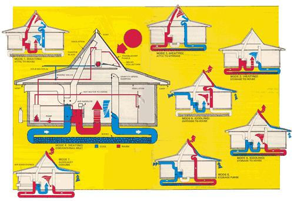

The eight simplified drawings on these pages illustrate how the various heating and cooling cycles of the Helio Thermics system work. In modes 1 through 4, the vents in the eaves (and atop the attic) are closed to retain heat during cool weather. In modes 5 through 8 (warm weather), these same vents are opened... thereby allowing the attic to cool through convection. Mode 4 illustrates the most complex?and least often used?heating cycle, in which water is pre-heated by the collectors in the attic, then brought to even higher temperatures by a gas-fired heater, and finally passed through the heat-exchange coils in the ""air handler"".